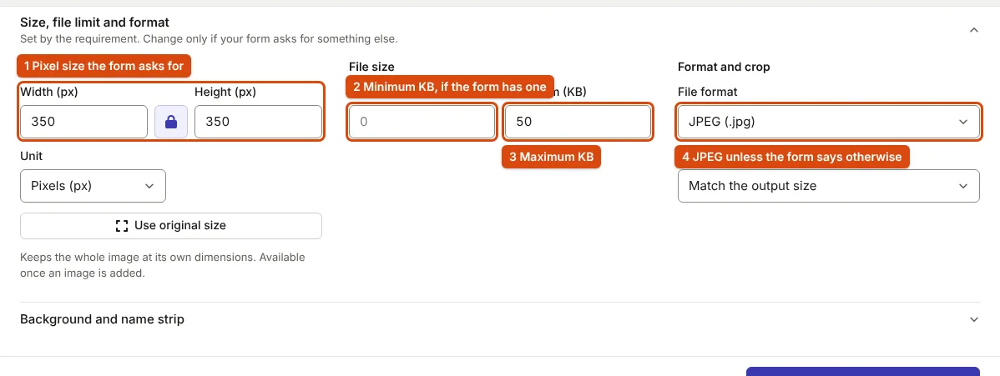

How to Get a Photo Under a KB Limit Without Blur
Crop first, set the pixel size second, compress last and only once. Measurements from our own resizer show why the order matters.
The short answer
Crop to what the form wants to see, set the pixel size the form asks for, and compress once from the original. If a limit still forces the quality down, reduce the pixel size further rather than the quality. The rest of this page shows why, with measurements from our own tool, and covers the cases where the method needs adjusting: minimum sizes, PNG files and signatures.
Pixel size decides how sharp the result can be
A JPEG's size depends on how many pixels it has and how much detail each one keeps. A limit in KB is a budget shared by all the pixels, so the more pixels you keep, the less detail each one gets. We ran the same test portrait through the resizer with a 50 KB limit at four sizes. The tool always tries quality 0.95 first and lowers it only as far as the limit requires, so the quality it settles on shows how much each size had to give up:
At 350 × 450 px the photo fitted at 0.95 with half the budget unused. At 1200 × 1600 px the same limit forced the quality down to 0.55, where skin turns blotchy and edges show 8 × 8 blocks. Nothing about the photo changed, only the number of pixels sharing the 50 KB.
The same pattern holds at other limits. Under 20 KB, the portrait needed quality 0.92 at 350 × 450 px and 0.40 at 1000 × 1333 px. Under 100 KB, 0.89 at 800 × 1000 px and 0.73 at 1200 × 1600 px. The full tables are on the 20 KB, 50 KB and 10, 100 and 200 KB pages.
The method, step by step
- Start from the original file. Every JPEG save throws away detail, and the losses add up. A photo forwarded through a chat app or already shrunk for another form has lost detail you cannot get back.
- Crop to the subject. Head and shoulders for a photo, the ink for a signature. Exam rules also require this: UPSC asks for the face to cover at least 75% of the photo (UPSC instructions) and NEET (UG) 2026 for 80% (bulletin, p. 16). Pixels spent on background are bytes not spent on the face.
- Set the pixel size from the form. If the form gives one, use it exactly: IBPS asks for a 200 × 230 px photo (CRP PO/MT-XVI, Annexure III). If it gives centimetres, convert with the DPI it states; see pixels, cm, DPI and KB. If it gives only a KB limit, choose a modest size such as 350 × 450 px for a portrait.
- Compress once, to the limit. Enter the maximum (and minimum, if there is one) and let the tool search for the highest quality that fits, instead of picking a quality number yourself.
- Check at 100% zoom. Eyes, hairline and the edges of the face should be crisp. If they are not, go back to step 3 and choose fewer pixels.

How the resizer finds the highest quality that fits
After cropping and resizing to the exact pixel size, the tool encodes the image at quality 0.95. If that is within the limit, it stops. If not, it checks that quality 0.05 fits at all (if even that is too large, it says so and suggests fewer pixels), then runs a binary search between the two: seven more encodings, each time keeping the best result that is at or under the limit. The limit is counted in bytes, with 1 KB = 1,024 bytes, so a 50 KB limit means at most 51,200 bytes, and the result panel shows the exact byte count.
When a range has a minimum and the image comes out smaller, the tool adds JPEG comment data to reach it. Comment data is ignored by image viewers, so the picture is unchanged. This matters for IBPS-style ranges: our 200 × 230 px portrait was 9.1 KB at quality 0.95, well under the 20 KB minimum, and was padded to 20.0 KB.
When the method needs adjusting
The file must be PNG
PNG is lossless, so there is no quality setting to lower (MDN image format guide). Our 350 × 450 px test portrait needed 196 KB as PNG, and the resizer reports that instead of producing a file that breaks the limit. If the form accepts JPEG, use it. If it requires PNG, the only lever is fewer pixels.
The form allows WebP
WebP usually stores a photo in fewer bytes than JPEG at a similar look: our portrait was 18.5 KB as WebP at 350 × 450 px against 26.5 KB as JPEG. None of the exam notices we checked (SSC, UPSC, IBPS, NEET) list WebP, so check the form first; see JPEG, PNG or WebP.
Signatures
A signature is mostly flat white, which JPEG stores cheaply. Our 300 × 100 px test signature was 8.0 KB at quality 0.95; cleaned with the signature cleaner first, 6.3 KB. With signatures the usual problem is falling under a minimum, not exceeding a maximum.
The photo is still rejected
Size is one check among several. Background, lighting, face coverage and the file name are checked too; see photo upload errors and fixes.
Frequently asked questions
Why did my photo get bigger after resizing?
Usually because the output has more pixels than the input (enlarging adds pixels, not detail), the output is PNG, or it was saved at maximum quality. Keep the pixel size at or below the original and output JPEG.
Is 50 KB the same as 50,000 bytes?
Not in this tool: 50 KB is 51,200 bytes here. Portals rarely say which they use. If a file just under the limit is refused, lower the maximum by 1 KB.
Should I lower quality or pixel size first?
Pixel size, down to what the form allows. Then let the tool choose the quality.
Does compressing twice hurt?
Yes. Each JPEG save loses some detail. Always compress from the original, and if the result is not right, start again from the original rather than re-compressing the output.
Sources
- IBPS: CRP PO/MT-XVI notification, 1 July 2026, Annexure III (photo 200 × 230 px, 20–50 KB)
- UPSC: Instructions for Uploading the Photo & Signature, face coverage, 20–200 KB
- NTA: Information Bulletin NEET (UG)-2026, p. 16
- MDN Web Docs: Image file type and format guide, JPEG is lossy, PNG lossless
- JPEG committee: JPEG 1 (ISO/IEC 10918)
Measurements on this page come from running ApplyReady's own tools on the synthetic test images described in the editorial policy. Found a mistake? Report an error.